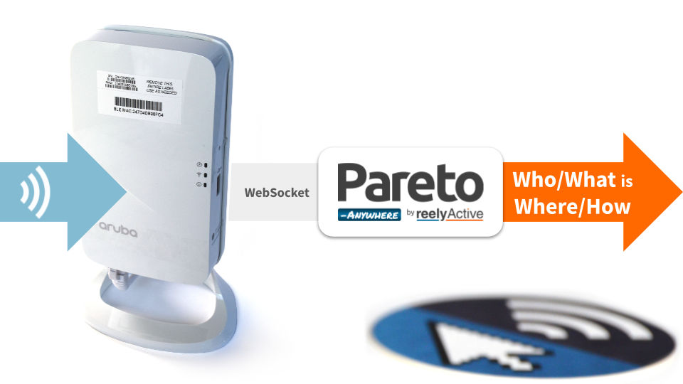

Configure an Aruba Instant AP
Our step-by-step guide to configure the access point(s) to forward data for processing by Pareto Anywhere.
The TL;DR (Too Long; Didn't Read)
Learn how we at reelyActive configure the APs for open source real-time location and more
- What will this accomplish?
- The AP(s) will forward Bluetooth Low Energy packet traffic to a server running Pareto Anywhere.
- What's Pareto Anywhere?
- Pareto Anywhere is open source software that makes sense of who/what is where/how, in any physical space, in real time.
- Can the AP do more?
- Yes. Aruba access points provide WiFi connectivity as well as capabilities for a host of complementary services.
Connect to the AP Step 1 of 3
Connect and log in to the access point over a local network.
- Will admin access be required?
- Yes. The admin login credentials will be required to complete the configuration of the AP.
- Is there a command line option?
- Yes. Should configuration via CLI be preferred over GUI, consult the Aruba documentation to enter the settings presented in Steps 2 and 3.
Connect the AP to the local network Part 1
Ensure that the access point is powered and connected to the local network from which it will be configured.
Consult the Aruba documentation specific to your AP model, if required.
Log in as admin Part 2
From a computer on the local network, browse to the access point via its IP address (ex: http://192.168.0.1).
Log in with the username admin and the corresponding password, then proceed to the next step.
Configure the IoT Transport Stream Step 2 of 3
Create and enable a Telemetry Websocket to forward data to Pareto Anywhere.
- What's a transport stream?
- A transport stream defines what data is forwarded where and how, in this case what ambient BLE data is sent to Pareto Anywhere via Websocket.
- Why IoT and not RTLS?
- The IoT service affords both real-time location and sensing of a wide range of devices while the RTLS service is specific to more precise location of only certain devices.
Prerequisites
Aruba Instant version 8.8 or greater is required. First upgrade the AP firmware if/as required.
Create a new transport stream Part 1
From the admin page:
- Browse to Configuration / Services from the left menu
- Select the IoT accordion from the main window
- In the IoT Transport Streams table, click on the + icon to create a new transport stream

Configure the transport stream Part 2
Consult the Aruba documentation for the latest Aruba IoT Websocket Interface guide, if required.
Complete the new transport stream popup as follows:
| Parameter | Value | Notes |
|---|---|---|
| Name | reelyActive | User-defined |
| State | Enabled | |
| Server type | Telemetry Websocket | |
| Server URL | ws://x.x.x.x/aruba | Substitute x.x.x.x for Pareto Anywhere server IP address* |
| Device classes | All | Optionally filter by class |
| Reporting interval | 900 seconds | Reduce to 5 seconds or less for occupancy analytics |
| BLE data forwarding | Enabled | Forwards payload/sensor data |
| Per-frame filtering | Disabled | |
| RSSI reporting format | Last | Best option for real-time location |
| Environment type | Office | Influences RSSI-based distance estimation in device filters |
| Proxy | — | Complete if required |
| Authentication | Use token | Required |
| Access token | token | Ignored by Pareto Anywhere |
| Device filters | 5 seconds (Reporting activity) |
Pareto Anywhere discards stale data |
*A Pareto Anywhere instance running on port 3001 of 192.168.0.123 would require ws://192.168.0.123:3001/aruba
Security Best Practices
The given transport stream parameters are intended to facilitate initial integration on a trusted local network.
The use of wss:// rather than ws:// is strongly recommended for production deployments and for data forwarding to remote instances, which in turn requires advanced configuration of Pareto Anywhere.
Contact us about our Beyond Integration plan for assistance.
Click OK to complete the configuration.
Configure the IoT Radio Profile Step 3 of 3
Create and enable the Bluetooth Low Energy radio profile on the AP.
- What's a radio profile?
- A radio profile defines which low-power wireless radios will be enabled on the AP as well as their configuration.
- Why BLE?
- Bluetooth Low Energy devices may spontaneously transmit advertising packets for discovery and interaction, an abundant source of ambient data which can be received by the AP's BLE radio.
Create a new radio profile Part 1
From the admin page:
- Browse to Configuration / Services from the left menu
- Select the IoT accordion from the main window
- In the IoT Radio Profiles table, click on the + icon to create a new radio profile
Configure the radio profile Part 2
Consult the Aruba documentation for the latest IoT – Basic Setup Guide, if required.
Complete the new radio profile popup as follows:
| Parameter | Value | Notes |
|---|---|---|
| Name | reelyActive | User-defined |
| State | Enabled | |
| Radio | Internal | |
| Radio mode | BLE | |
| BLE operational mode | Both | Beaconing = discoverability, Scanning = discovery |
| Console | Off | |
| Tx Power | 0 dBm |
Click OK to complete the configuration.
Save the changes Part 3
Click the Save button at the bottom right of the window to complete and enable the configuration.
Observing data in Pareto Anywhere requires no additional action if an instance based on the pareto-anywhere package is running, or, for quick-and-dirty validation, run barnowl-aruba as described below.
If a Pareto Anywhere installation based on the pareto-anywhere package is already present and running on the target computer on the host network, the data forwarded by the gateway should be available in both the web apps and APIs.
To quickly validate that data is correctly received on the target computer on the host network, it is possible to run barnowl-aruba standalone to initiate a WebSocket server on port 3001 using the /aruba route as follows:
git clone https://github.com/reelyactive/barnowl-aruba.git npm install npm start
If the access point is correctly configured, and at least one compatible Bluetooth Low Energy device is advertising in range, raddec data should appear in the console.
Embrace the ambient data in your space
Make any physical space context-aware with Pareto Anywhere.
Where to next?
Continue exploring our open architecture and all its applications.
-

-
reelyActive Developers
Browse all developer documentation and tutorials.